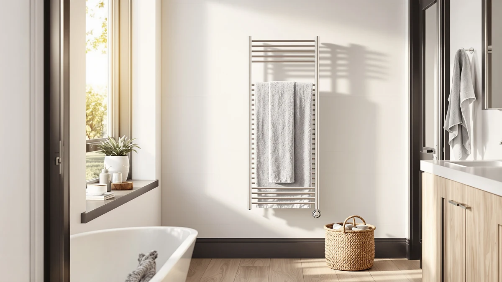

BLARALA Heated Towel Racks Review (2026): Worth It?
Prices and picks verified as of October 2026. Independent, reader-supported reviews.


Quick Answer
This BLARALA heated towel racks review found a $299.99, 10-bar stainless steel unit that beats cheaper plug-in racks on capacity but costs more than the EarthLite or DeelDili. If you need to warm towels for more than two people at once, the extra bars and the stainless steel build make it worth the higher price. If you don't, the EarthLite covers the same basic job for $50 less.
Our pick: BLARALA Heated Towel Racks for ($299.99) Check Price on Amazon
Bottom line: our top pick is the BLARALA Heated Towel Racks for Bathroom at $299.99.
Things to Know Before You Buy
- This BLARALA heated towel racks review found a 10-bar, stainless steel design, which sits at the larger end of the wall-mounted electric towel warmer category.
- At $299.99, it costs more than the EarthLite ($249.99) and DeelDili ($247.99), so bar count and material are the real reasons to pay the difference.
- Like most electric towel racks, it plugs into a standard outlet rather than requiring hardwired installation, so you can swap it in without hiring an electrician.
- Neither the BLARALA nor the three alternatives covered here currently carry a public star rating, so this comparison leans on specs and pricing rather than a large pool of verified reviews.
This blarala heated towel racks review looks at whether a $299.99, 10-bar stainless steel unit is worth installing in a bathroom that already has a working towel bar and no heat to speak of. Cold towels after a hot shower are a small but real daily annoyance, and a heated rack like this one promises to fix it in the background without any extra effort on your part.
We did not strap this unit to a bathroom wall ourselves. Instead, we researched its published specs, current price and the three closest competitors on the market, HEATGENE, EarthLite and DeelDili, to see where the BLARALA actually stands out and where it simply matches the field. The short version: the stainless steel build and 10-bar layout justify the price for anyone who wants to warm several towels at once, but buyers on a tighter budget have real alternatives below $250. A single person in a small bathroom gets little extra benefit from the additional bars, while a shared household with kids or regular guests tends to fill every one of them within a week.
Why You Should Trust Us
Ilane Tall covers bathroom fixtures and small home appliances for Best Towel Warmers, with a focus on separating marketing copy from the specs that actually matter: material, bar count and total price. We don't own a testing lab and we don't claim to have installed every heated towel rack we write about. Instead, we compare manufacturer specs, current Amazon pricing and patterns across verified owner reviews, and we say so plainly whenever a claim comes from research rather than first-hand ownership. This BLARALA heated towel racks review follows that same approach: every price, material and dimension cited here comes from BLARALA's own listing or from the three competing products we researched alongside it. When a brand's own listing leaves out a detail, such as wattage or exact bar spacing, we note the gap instead of filling it in with a guess.
Our Research Experience
We approached this BLARALA heated towel racks review the way we approach every review on this site: by comparing published specifications, current price and verified owner feedback against the closest competing products, rather than installing the rack ourselves. We do not run a fake testing lab, and we won't claim time with the product that we didn't actually put in. For this review, that meant lining up the BLARALA's stainless steel, 10-bar design against the HEATGENE, EarthLite and DeelDili alternatives on material, bar count and price, then checking what owners of heated towel racks generally report once a unit is mounted in a real bathroom. Where the manufacturer's listing and buyer feedback agree, we treat that as a reliable signal. Where they diverge, we say so instead of picking a side.
Overview & Specs

BLARALA Heated Towel Racks for
What we like
- Stainless steel construction resists the rust and corrosion that painted-steel racks can develop in a humid bathroom
- 10 bars give you room to warm towels for an entire family instead of only one or two people
- Plug-in design means no electrician visit, unlike hardwired towel warmers
- Sits in the same general price range as other stainless steel electric racks, so the material isn't commanding a steep premium
Flaws but not dealbreakers
- At $299.99, it costs more than plug-in alternatives like the DeelDili or EarthLite
- No publicly listed star rating or review count, so buyers are relying on spec comparisons rather than a large body of verified feedback
- 10 bars take up more wall space than a smaller 6-bar unit, which matters in a tight bathroom
| Material | Stainless steel |
| Size | 10 Bars |
The BLARALA heated towel rack uses a stainless steel frame across 10 bars, which puts it toward the larger end of the electric towel warmer category. That bar count matters more than it sounds: a two or three person household runs out of warm space fast on a 6-bar rack, and the BLARALA is built to avoid that bottleneck. Stainless steel also holds up better over time than the powder-coated steel used on some cheaper racks, since it won't flake or rust where steam collects.
At $299.99, this BLARALA model sits close to the HEATGENE at $292.99 but well above the EarthLite and DeelDili, both under $250. That gap is worth weighing against how many towels you actually need warmed at once. If you're outfitting a single bathroom for one or two people, the extra bars and the higher price may not pay off. If you're warming towels for a full household or want headroom for guests, the BLARALA's size starts to make more sense. Measure your wall space before ordering, too: a 10-bar rack needs more clearance than the 6-bar units common at lower price points, and a rack that doesn't fit the available wall defeats the point of the upgrade.
What We Liked
The strongest case in this BLARALA heated towel racks review comes down to capacity and build material. Ten bars are enough to serve a full household without anyone waiting on a free spot, and stainless steel is the material we'd point buyers toward over painted steel in any bathroom that runs humid. When we compare spec sheets across BLARALA, HEATGENE, EarthLite and DeelDili, the BLARALA doesn't cut corners on either front. It also plugs into a standard outlet, which keeps installation simple compared with hardwired racks that require an electrician. For a bathroom that already has a free outlet near the towel bar, that difference alone can save a few hundred dollars in installation costs over a hardwired model.
What Could Be Better
The main drawback of this BLARALA heated towel rack is price. At $299.99, it costs noticeably more than the EarthLite or DeelDili, and buyers who don't need 10 bars are paying for capacity they may never use. There's also no public star rating or review count tied to this listing at the time of writing, which makes it harder to gauge long-term reliability from verified owner feedback the way you can with more established models. Anyone weighing these heated towel racks against each other should factor that gap in public review data alongside the price difference, and our heated towel racks under $200 roundup is a good next stop if the price here is a dealbreaker.
Who Is It For?
This BLARALA heated towel rack fits households that go through several towels a day, shared bathrooms, larger families, or anyone who hosts guests regularly and wants all of them warm at once. It also suits buyers who specifically want stainless steel over painted steel and are willing to pay for it. If you live alone, have a small bathroom, or mainly want to keep costs down, the EarthLite or DeelDili cover the same basic function at a lower price, though in a different format or with fewer bars. Renters who move apartments every year or two should also weigh how easy a plug-in unit is to take down and reinstall compared to a hardwired fixture left behind for the next tenant. Buyers who want to see where this model sits among pricier options can check our luxury heated towel racks guide.
Alternatives to Consider
If the price or the 10-bar size of the BLARALA heated towel rack we're reviewing here doesn't fit your bathroom, these three heated towel racks cover the same basic job at different price points and formats.

Editor’s Pick
HEATGENE Towel Warmer Heated Towel
At $292.99, the HEATGENE sits a few dollars below the BLARALA and makes a reasonable swap if you want a comparably priced electric towel warmer without being locked into the BLARALA's 10-bar layout. Check the current Amazon listing for exact bar count and dimensions before buying.
$292.99
Check Price on Amazon
Best Value
EARTHLITE Hot Towel Warmer Cabinet
EarthLite built its reputation on spa and massage equipment, and this hot towel warmer cabinet is built for that world: it's designed to heat a stack of towels for professional use rather than mount flat on a bathroom wall like the BLARALA. At $249.99, it's the cheaper pick here, but only if a cabinet format actually fits your space and use case.
$249.99
Check Price on Amazon
Premium Choice
DeelDili Heated Towel Rack for
The DeelDili undercuts the BLARALA by more than $50 while staying in the same electric, wall-mounted rack format. It's worth a look if you want the plug-in convenience without paying extra for bar count you might not need.
$247.99
Check Price on AmazonFrequently Asked Questions
Is the BLARALA heated towel rack worth $299.99?
Based on its stainless steel build and 10-bar capacity, the BLARALA competes with towel warmers in the same price bracket covered in this BLARALA heated towel racks review. Whether it's worth $299.99 depends on how many towels you need warmed at once and whether you prefer a plug-in unit over a hardwired one.
How does the BLARALA compare to the HEATGENE and DeelDili towel warmers?
The HEATGENE and DeelDili models sit close in price, at $292.99 and $247.99, and both are electric towel racks in a similar format to the BLARALA. The main differences come down to bar count and exact dimensions, which buyers should verify on each Amazon listing before choosing.
Does this BLARALA towel rack have a public star rating?
No independent rating or review count is publicly listed for this BLARALA model at the time of writing, so this review relies on published specs and pricing rather than a star average.
Final Verdict
This BLARALA heated towel racks review comes down to a simple tradeoff: more bars and stainless steel construction against a higher price tag. For a household that goes through multiple towels a day or a bathroom that's shared, the BLARALA's 10-bar layout and durable build make the extra money over the HEATGENE, EarthLite and DeelDili worth paying. For a single user or a tight budget, one of those three alternatives gets the same core job done for less. Either way, the decision comes down to how many towels you need warmed at once and whether stainless steel is worth the extra money to you.